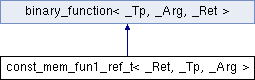

类 const_mem_fun1_ref_t< _Ret, _Tp, _Arg > 继承关系图:

Public 成员函数 | |
| const_mem_fun1_ref_t (__fun_type __pf) | |
| _Ret | operator() (const _Tp &__r, _Arg __x) const |
额外继承的成员函数 | |
 Public 类型 继承自 binary_function< _Tp, _Arg, _Ret > Public 类型 继承自 binary_function< _Tp, _Arg, _Ret > | |
| typedef _Tp | first_argument_type |
| typedef _Arg | second_argument_type |
| typedef _Ret | result_type |
该类的文档由以下文件生成:
- E:/ReactOS-0.4.6/sdk/include/c++/stlport/stl/_function_adaptors.h